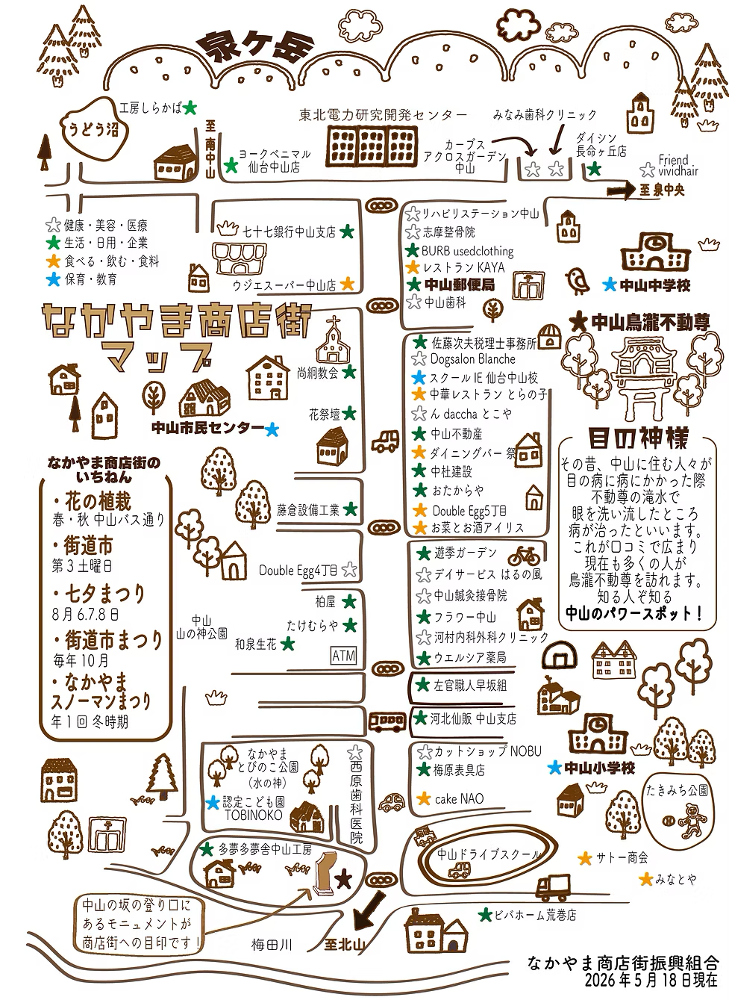

こどもやファミリーが元気いっぱい過ごす街
お店をタップすると詳細＆サイトへ。カテゴリを押すとその種類のお店が光ります。スマホは指で拡大できます。

上のカテゴリボタンで絞り込めます。タップで公式ページへ。
※ 公式マップ画像を土台にした版（位置関係は原図と一致）。店名・カテゴリ・コメントは暫定です。 店舗・URL・子供コメント・位置はファイル先頭の STORES を編集してください。URL未設定の店は「サイト準備中」と表示されます。
STORES